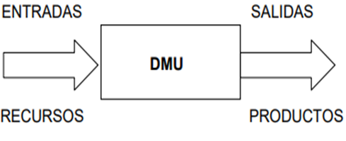

El Análisis Envolvente de Datos es una técnica no paramétrica cuyas primeras aplicaciones se remontan a 1978 (Riaño Henao and Larrea Serna 2022a). Su origen se encuentra en la investigación doctoral de Rhodes, quien evaluaba la eficacia del programa de educación Follow-Through en las escuelas públicas de Estados Unidos. No obstante, el desarrollo de esta técnica no se debe exclusivamente a Rhodes. También es fundamental reconocer la contribución de Charnes, Cooper, Banker, Färe, Grosskopf, Seiford y Thrall, quienes desempeñaron un papel crucial en el desarrollo de los modelos matemáticos que sustentan el DEA (Taoumi and Lahrech 2023).
Los métodos de selección de variables persiguen, primordialmente, ordenar un conjunto de variables (inputs y outputs) definidas para evaluar a las Unidades de Toma de Decisiones (DMUs) usando modelos DEA, con el propósito de seleccionar un número restringido de variables, a manera de mantener la relación causal en los modelos y que éstos indiquen adecuadamente el desempeño de las DMUs evaluadas (Peças et al. 2019).
El DEA es una técnica no paramétrica que permite evaluar la eficiencia de los productores de café al analizar los recursos empleados y los resultados obtenidos, especialmente en situaciones con múltiples entradas y salidas (Riaño Henao and Larrea Serna 2022b).

(Charnes, Cooper, and Rhodes 1978) fueron los pioneros en desarrollar el método de Análisis Envolvente de Datos (DEA), un enfoque no paramétrico que no requiere una estructura específica para definir la frontera de eficiencia. Esto permite comparar la eficiencia técnica sin necesidad de conocer previamente una función de producción. El DEA es una metodología de optimización diseñada para medir la eficiencia relativa de las unidades organizacionales (DMU’s, por sus siglas en inglés de Decision Making Units, o Unidades de Toma de Decisión).
En este orden de ideas, el uso de metodologías para evaluar la eficiencia, como el DEA, se ha consolidado como una herramienta clave en el ámbito de la investigación. Se ha sido desarrollado a partir de los planteamientos teóricos de Farrell en 1957 según Cooper et al., y desde entonces ha sido ampliamente aplicado en diversas disciplinas (Börner et al. 2017).
Este enfoque se utiliza para medir la eficiencia técnica y asignativa en sectores tan variados como la producción, la salud, el deporte, la educación, el medio ambiente, los recursos naturales, el transporte, la energía, el turismo y las finanzas, entre otros. En estos estudios, se emplean tanto técnicas paramétricas, basadas en desarrollos econométricos, como no paramétricas, que se fundamentan en la programación matemática. Ambas metodologías permiten evaluar el rendimiento de unidades productivas o sistemas, proporcionando información clave para la toma de decisiones y la mejora continua.
Por su parte, el uso del DEA en la cafeticultura permite analizar la eficiencia técnica de las unidades productivas, comparando entradas como insumos agrícolas y mano de obra, con salidas como volumen de producción e ingresos generados. En un estudio reciente realizado en Colombia, (Gaitán 2022) identificó diferencias significativas en la eficiencia de las fincas cafetaleras asociadas a factores como la capacitación técnica, el acceso a tecnologías limpias y la diversificación productiva.
Diferencia entre eficiencia técnica, económica y ecoeficiencia
La eficiencia técnica se centra en maximizar la producción utilizando un conjunto fijo de insumos, sin tener en cuenta los costos ni las externalidades ambientales (Harya et al. 2024). Se refiere a la capacidad de un sistema productivo para generar la mayor cantidad posible de producto con la mínima utilización de recursos, optimizando los procesos técnicos. Este enfoque prioriza el rendimiento productivo, ignorando aspectos financieros o impactos ecológicos.
La eficiencia económica se centra en maximizar la rentabilidad mediante la optimización de la relación entre costos y beneficios (Bhat and Kaur 2022). Evalúa el uso de recursos desde una perspectiva monetaria, buscando generar el mayor ingreso posible con los menores costos de producción. Este enfoque prioriza la viabilidad financiera, asegurando que las decisiones de gestión resulten en un equilibrio óptimo entre los recursos invertidos y los retornos obtenidos.
En contraste, la ecoeficiencia incorpora el impacto ambiental como un criterio central, evaluando simultáneamente la productividad, los costos y las externalidades entre ellas las emisiones de carbono o la pérdida de biodiversidad (Cardoso et al. 2024). Esta integración holística distingue a la ecoeficiencia dado que es un enfoque más completo para la sostenibilidad.
La ecoeficiencia trasciende las nociones tradicionales de eficiencia al exigir un equilibrio ético entre el bienestar humano y la conservación del capital natural, un aspecto que debería guiar las políticas agrícolas globales.
Así, la ecoeficiencia busca producir más con pocos recursos y menos daño ambiental. Mientras la eficiencia técnica y económica se enfocan en desempeño físico o financiero, la ecoeficiencia añade una dimensión ecológica. Por ello se plantea que la ecoeficiencia es clave en sistemas sostenibles, como los agrícolas dado que aporta una mirada distinta sobre el uso eficiente de los recursos.